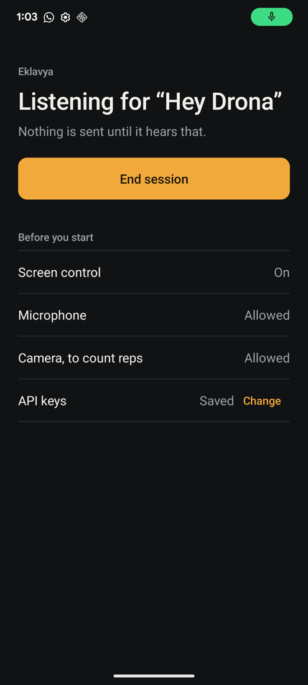
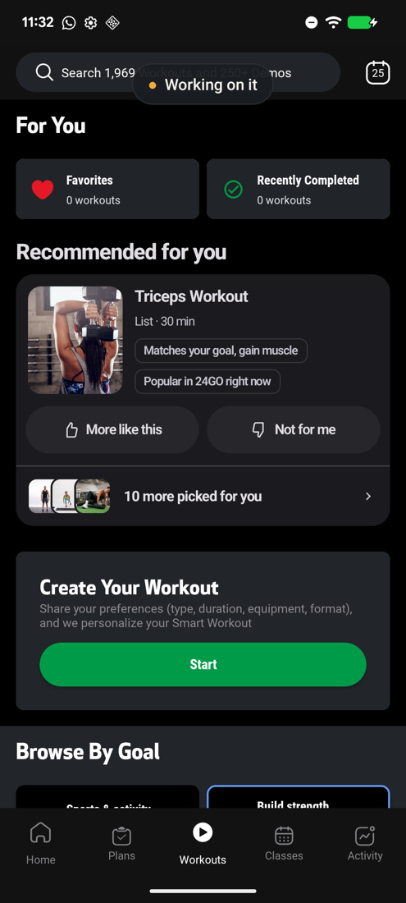
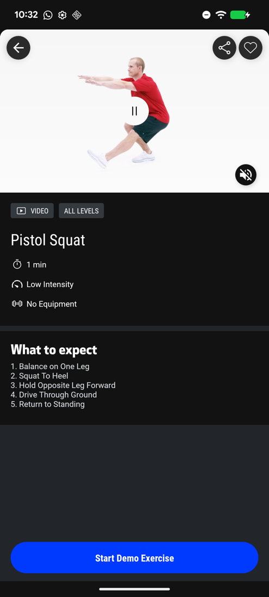
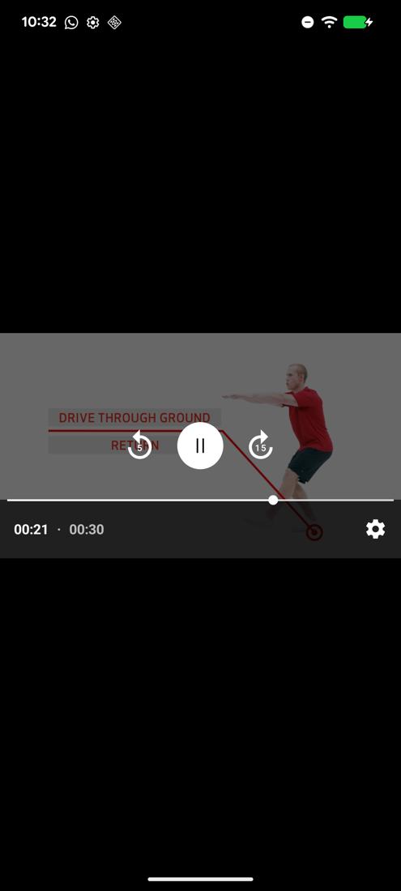
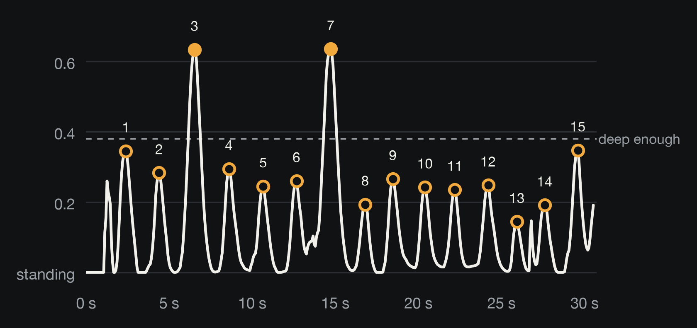

A Pixel 7a with a session running, and one request played into it on 26 November 2026. The lines are the app's own log. The notes beside them say why each step is there.
“Hey Drona, show me the video for pistol squat.”
Eklavya is a voice gym coach for Android that operates the fitness app already on your phone. Phone on a tripod, earphones in: you ask, the coach answers, finds the exercise in your gym's app and plays its demo. Ask it to count your squats and it watches through the front camera, counts aloud and tells you what to fix.
Early: it works one gym's app (24GO) and has been tested with recorded requests and recorded sets, not yet with a live voice or a person in front of the camera. MIT licence. Nothing to download; you build it from the source.

One spoken request, from the app's log
-
a recording is played into the session: "Hey Drona, show me the video for pistol squat."
The voice path has been tested this way so far: recorded requests, not a person speaking.
-
wake phrase heard
The phrase is spotted on the phone. Nothing is sent anywhere until the phone itself hears it.
-
user Hey Drona, show me the video for Pistol Squat
-
coach Sure.
From here the audio goes to OpenAI GPT-Live, which listens and talks at the same time. The coach says one word; the video is the answer.
-
toolshow_exercise_demo {"exercise":"Pistol Squat"}
One of the coach's three tools: show a demo, count a set, report on the last set.
-
went back 1 time(s) to start from the app's main screen
-
tap_1(1.00)tap [1] View "search box"
A decision model, TypeSafe Jev, picks one action at a time from the list of what is on the screen. The figure in brackets is its confidence.
-
type_2(0.55)type "Pistol Squat" into [2] EditText "Search 1,969 Workouts and 250+ Demos"
-
submit_2(0.96)press the keyboard's search or enter key in [2] EditText "Pistol Squat"
24GO searches only when the keyboard's search key is pressed.
-
tap_5(0.99)tap [5] CardView "Pistol Squat 1 minutes"
-
tap_16(0.87)tap [16] ViewGroup "Start Demo Exercise"
-
done(1.00)the task is already complete on this screen
-
session closed, 24 s billed
Voice is billed by the second, so the connection closes a few seconds after the talk ends.
Fifteen seconds from the wake phrase to the video in this run.
What that looks like on the phone
Apart from the small status pill, these screens are 24GO's own. The pill is readable from a few steps away, and touches pass through it. Swipe sideways for all three.



“Hey Drona, count my squats.”
The phone's front camera takes over. A pose model on the phone finds your joints in each frame; from those it counts reps and checks a few things a coach would look at. Counts and cues come from the phone's own voice, so no voice connection is open, or billed, while you lift.

-
phone Ready.
That recorded set, played through the pose model on the phone. “Ready” means it can see the joints this exercise needs.
-
phone 1 2
-
phone Sit deeper.
A correction is said only for a fault seen on two reps running, at most once every three reps, and the same one not again for six.
-
phone 3 4 5 6 7 8 9
-
phone Sit deeper.
-
phone 10 11 12 13 14 15
-
phone Sit deeper.
-
set over: 15 squats in 30 seconds. Form faults seen: "Sit deeper." on 13 of 15 reps.
The set closes by itself eight seconds after the last rep.
-
phone 15 reps. Next set, sit deeper.
Asked afterwards “how was my last set?”, the coach said: “Sure. Fifteen squats in thirty seconds. Sit deeper: you missed depth on thirteen reps.”
What it counts and what it checks
You name the exercise; it is not recognised from the picture.
| Exercise | Stand | Checked |
|---|---|---|
| Squat | Side on | Depth; chest dropping forward; knees caving in (from the front) |
| Bicep curl | Side on | Swinging the torso; elbows drifting forward; stopping short at the top or bottom; dropping the weight fast |
| Shoulder press | Facing the phone | Stopping short of straight arms; one arm lower than the other |
How it decides what to tap
The navigator first backs out to the app's main screen, so every request starts from a known place. Then it reads the screen, offers the model every action that exists on it (“tap [16] Start Demo Exercise”, “type the exercise name into [2]”, “scroll [5] down”, back, done, stuck) and carries out the one it picks.
The model never writes text or coordinates, so it cannot tap something that is not there. An accessibility service carries out each action.
app: io.a24go.android.dev | 1080x2400[2] FrameLayout "Show player controls" clickable (540,446) #detailsVideo[3] ImageButton "fab back" clickable (73,191) #fabBack[8] TextView "Barbell Front Squat" clickable (540,961) #detailTitle[13] TextView "1. Start with Barbell On Shoulders 2. Position Feet Shoulder Width ..." (540,1566)[14] ViewGroup "Start Demo Exercise" clickable (540,2242) #ctaPrimaryActionView
Four rules sit outside the model's choice
- 1Some buttons are never on the list. Buttons that pay, book, post or unlock are never offered.
- 2A commitment is yours to make. Every decision also asks whether the screen wants a commitment: a payment, a booking, an account change. If so, the navigator stops and hands back.
- 3“Done” has to be earned. It is offered only after the request has typed or tapped the thing asked for, so a video left playing by an earlier request cannot pass as the answer.
- 4Unsure means stop. Below 40% confidence the navigator stops and says what it was unsure about.
What it stores and sends
An Android accessibility service can read everything on screen in every app. This is what Eklavya's service reads, and where it goes.
- Microphone
- While a session runs the phone listens for the wake phrase on the device, and nothing is sent until it hears it. When it does, audio goes to OpenAI until the exchange ends, starting with the 2.5 seconds before the phrase was recognised: the phrase itself and whatever was said just before it. Nothing is recorded or kept.
- Camera
- Used only while a set is being counted. Each frame goes through a pose model on the phone and is then dropped: no picture or video is stored, and none leaves the phone. The result (reps and faults) reaches OpenAI only if you ask the coach about your last set.
- Screen
- Eklavya reads only the gym app's windows, only while carrying out a request, and never copies the contents of password fields. That text, including your name if the app shows it, is sent to the decision model you chose: TypeSafe by default.
- Keys
- Your API keys stay in the app's private storage on the phone and are sent only to the service they belong to.
- Nothing else
- Nothing else leaves the phone, and there are no analytics. Release builds have no remote-control door; the debug commands exist only in debug builds and only for senders holding Android's
DUMPpermission (adb).
The privacy page sets this out in full, with what this website records.
Status
Early, and built for one person on one gym's app (24GO).
| Part | State |
|---|---|
| Reading and driving another app's screen | Works on a Pixel 7a (Android 16) |
| Finding the way with a decision model | Works on the phone with Jev |
| Voice: wake phrase, spoken exchange, tool call, spoken result | Works on the phone when a recording is played into the session; not yet tried with a person speaking, with earbuds, or in a gym |
| Camera: rep counting and form cues for squats, curls and shoulder presses | Counts recorded sets correctly, on a laptop and through the pose model on the phone; the camera opens and runs with another app in front. Not yet tried with a person in front of the phone |
| What the coach can do | Three things: show an exercise's demo in 24GO, count a set, report on the last set |
| Planning a workout, logging sets to Hevy | Not started |
Three recorded requests, measured
Played into a running session on the phone on 25 November 2026, a day before the log above. The third is what it does when the gym's app has no such demo: it says so.
| Request | What happened | Wake phrase to video | Voice billed |
|---|---|---|---|
| “…show me the video for pistol squat” | Demo playing | 13 s | 24 s (about 2 cents) |
| “…can you show me the box squat?” | Demo playing | 12 s | 22 s |
| “…show me how to do a lat pulldown” | Coach: none listed under that name | (10 s to the answer) | 24 s |
At about 2 cents an exchange, thirty exchanges in a workout cost about 60 cents of voice, plus well under a cent for the decision model.
Asking for a count is billed 9 seconds: the exchange closes as soon as counting starts.
Counting, measured
32 recorded sets of about 30 seconds each, four people, run through the same pose model the phone uses, on 26 November 2026.
- Reps
- On 29 of the 32 the count equals an independent peak count of the raw signal. The other three start mid-rep or with the dumbbells being picked up, and there the peak count is one or two higher. In the two of those checked against the video frames, the counter was right once and within one rep the other time.
- Form
- All four curl sets labelled as bad form got a named fault; none of the four labelled good did. The two squat sets that were plainly shallow were told “Next set, sit deeper”; no other squat set was. Two sets labelled good each got one cue mid-set. The recordings do not say which fault each “bad” set shows, so this is as far as they can check the rules.
- On the phone
- The pose model takes about 37 ms a frame on a Pixel 7a, and the camera path runs at about 21 frames a second with another app in front.
- Not tested
- A person in front of the phone's own camera, a barbell or rack hiding joints, gym lighting, and other people in the picture.
To try it you need JDK 17 to 21, the Android SDK, a phone on Android 13 or later, an OpenAI API key and a TypeSafe API key. The README has the steps and the rest of the measurements.
Why the coach answers to Drona
The name is from the Mahabharata. Eklavya had no access to the teacher he wanted, Drona, so he trained himself in front of a stand-in. Here you are Eklavya, and the stand-in answers to “Drona”.
The wake phrase was also chosen by test. With synthesized voices, the untrained keyword spotter caught “Hey Drona” in 16 clips out of 16, also with heavy noise mixed in, and never fired on 12 near-miss sentences (“hey Rona”, “hey Donna”, “drone”). It caught “Hey Eklavya” in none of 16. Real voices and real gym noise are still to be tried.